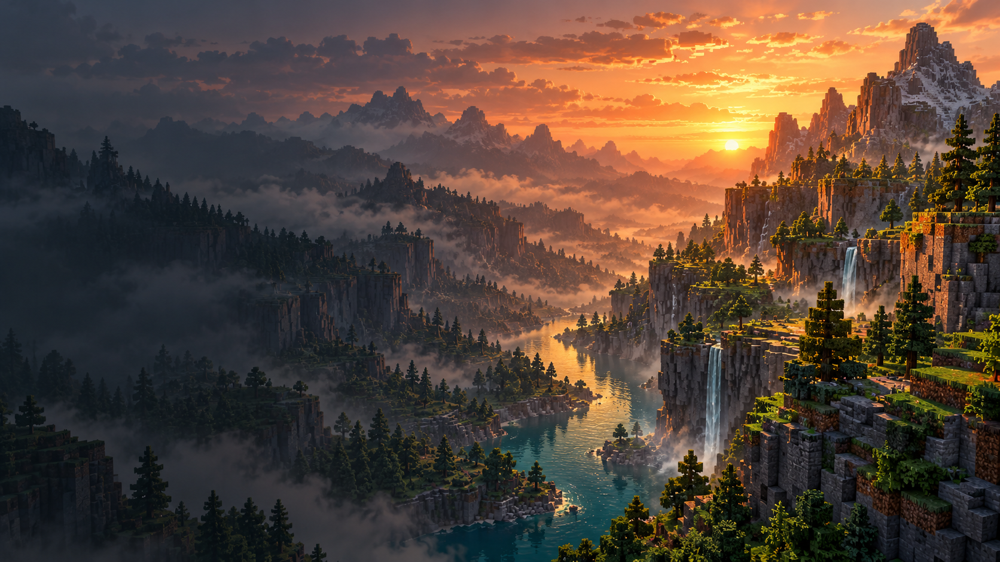

Всё по сборкам
Отдельные миры, ресурспаки и настройки. Переключайся между сборками в лаунчере.
Знакомый Minecraft. Другая основа.
Независимый клиент на Rust и свой лаунчер. На основе Horizon, с характером Atlas.
Windows x64GitHub
Atlas 1.4.1
Средний FPS1474
Самый низкий фпс476
Средний FPS1135
Самый низкий фпс446
Средний FPS1421
Самый низкий фпс517
Средний FPS1285
Самый низкий фпс367
Intel Core i7-13700F · GeForce RTX 40601920×1080 · Vulkan · 16 чанков · без модов
Рендер в текстуру. Один 12-секундный пролёт на сцену, 2 с разогрева. Дальность симуляции 12 чанков, VSync выключен. Для деревни 1474 FPS — ориентир.
Нижний показатель FPS вычисляется по среднему времени 1% самых медленных кадров.
Minecraft на нативной основе Rust. Atlas объединяет игру и лаунчер: меньше возни с файлами, больше места для своих идей.

Отдельные миры, ресурспаки и настройки. Переключайся между сборками в лаунчере.
Выбирай совместимые нативные моды в каталоге Atlas и устанавливай в свою сборку.
Открытый код и обновления с GitHub. Можно следить за изменениями — или заглянуть внутрь.
Portable-версия для Windows. Скачай, распакуй и начни со своей первой сборки.
Скачать лаунчерРелизы и подробностиПолностью извлеки ZIP в отдельную папку.
Создай профиль и свою первую сборку.
Если нужны игровые файлы, лаунчер предложит их скачать.